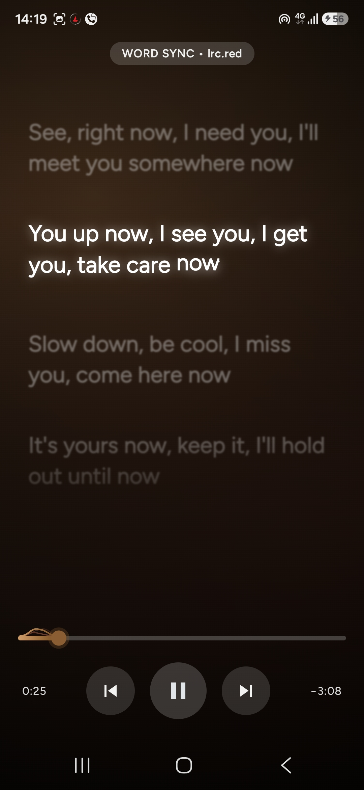
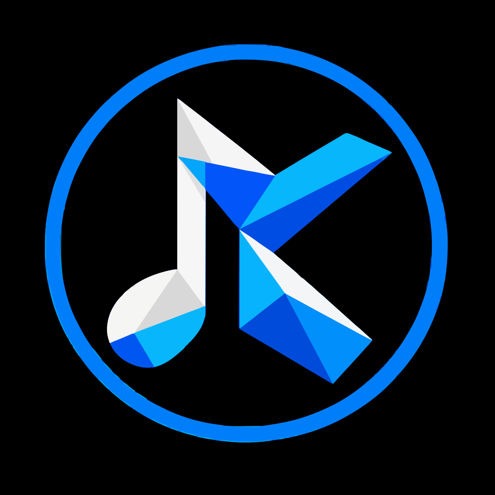
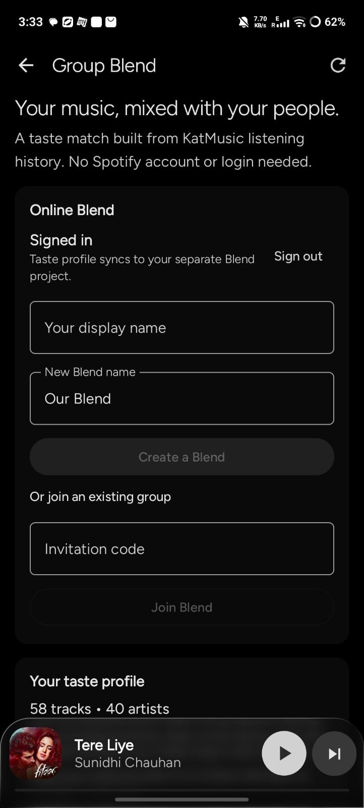
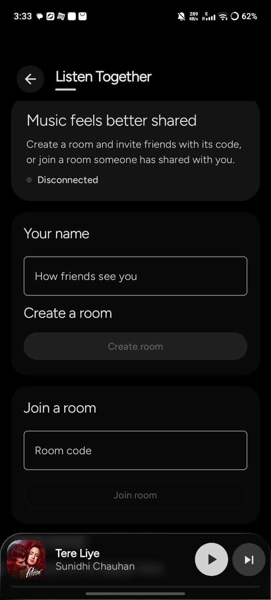
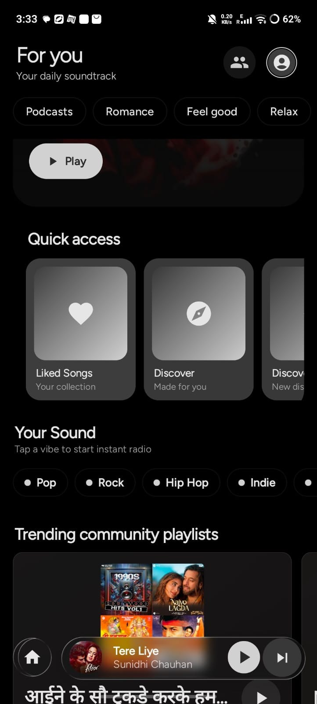
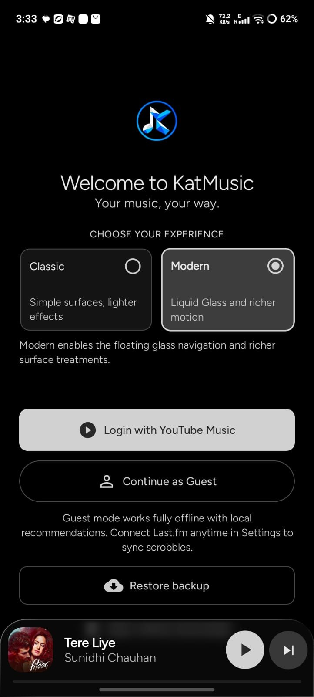
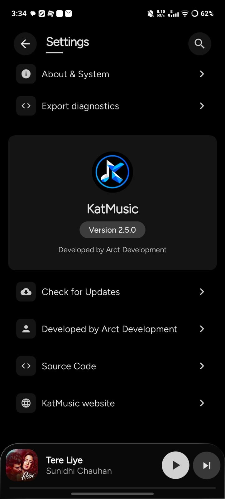
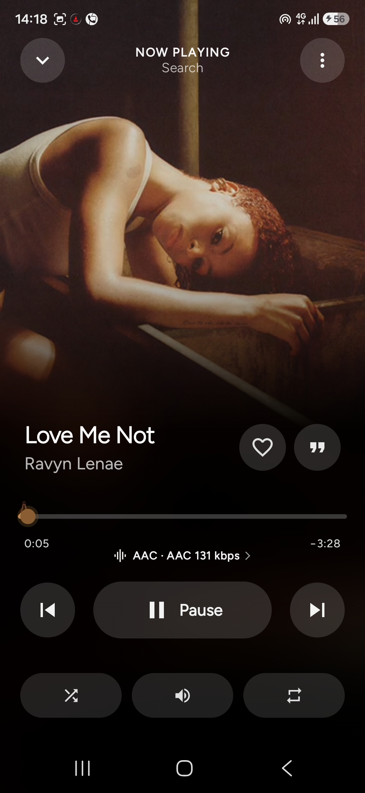
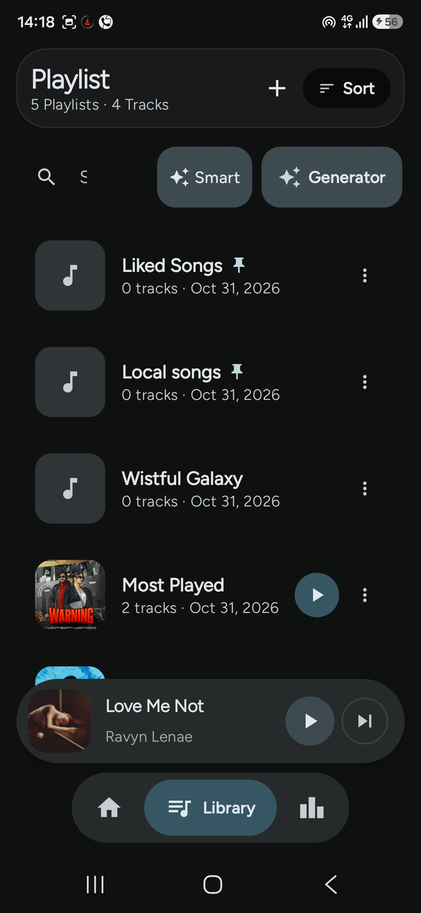
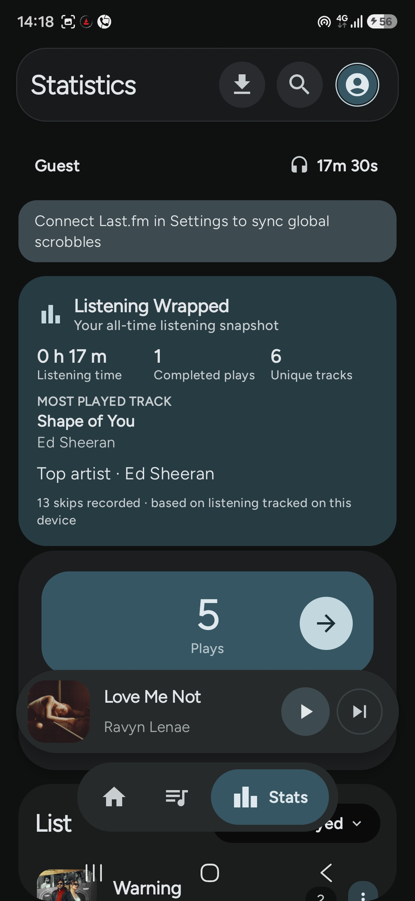

Follow every line.
Line- and word-synced karaoke lyrics, multiple providers, translation, romanisation, text sizing and timing offset.


KatMusic ↓0 DownloadAn Android player for YouTube Music. Listen together with friends, blend your taste into one playlist of people, and enjoy a Liquid Glass UI built around your music.



Specific features, not empty superlatives. This is what the app actually includes.
Line- and word-synced karaoke lyrics, multiple providers, translation, romanisation, text sizing and timing offset.

A native C++ engine built around Oboe, with parametric and graphic EQ, presets, AutoEQ profiles and supported direct-output paths.
Turn the words you love into a clean card with artwork, title and artist, then send it anywhere.
Pick Classic for simple surfaces, or Modern for Liquid Glass, floating glass navigation and richer motion.
Track progress, cancel or retry, and pause Wi-Fi-only downloads on mobile data.
Crossfade planning, BPM and phase analysis, and WSOLA time stretching.
Your library stops being a solo thing. Start a room with friends, or blend everyone's taste into one place.

Choose your experience the first time you open KatMusic, and change your mind whenever you like.
Simple surfaces, lighter effects.
Liquid Glass and richer motion, with floating glass navigation.
Captured on Android. Swipe through the player, lyrics, library and settings.




Pick the expanded player that fits how you listen. Settings → Playback & UI → Player Style.
Compatibility varies by device. Some output modes depend on your hardware and Android version.
Universal for most devices. ARM64 for 64-bit ARM phones. Legacy for Android 7–9.
Open the downloaded package and follow Android's installation prompt.
Launch the app and configure account access or optional integrations in Settings.
Always the newest stable release, pulled live from the project's public GitHub. No third-party APK mirrors.
GPL-3.0 source
Could not load release details. The GitHub releases page still works.
No analytics or advertising-tracking SDK, according to the project documentation.
No. KatMusic is an independent, third-party Android project. It is not affiliated with, endorsed by or officially connected to Google or YouTube.
The current release offers Android 10+ packages and a legacy package for Android 7–9. Some features and media controls use alternatives on older Android versions.
The universal APK is the recommended option for most devices. The ARM64 package is for 64-bit ARM devices. Choose the legacy package only for Android 7–9.
Create a room and invite friends with its code. The host approves who joins, and rooms include chat and synchronized playback. You can also join a room someone shared with you.
Group Blend is a taste match built from your KatMusic listening history. You can create a Blend, or join a friend's with an invitation code. No Spotify account is needed.
You can log in with YouTube Music or continue as a guest. Guest mode works fully offline with local recommendations, and you can connect Last.fm in Settings to sync scrobbles.
No. Output modes, supported codecs and bit-perfect behaviour depend on the Android device, DAC, audio route and operating-system limits.
The project README states that KatMusic does not bundle an analytics or advertising-tracking SDK. Network requests are made to services required by the features you use.
Yes. KatMusic is GPL-3.0 licensed. The source, issue tracker, contribution guide and release history are public on GitHub.